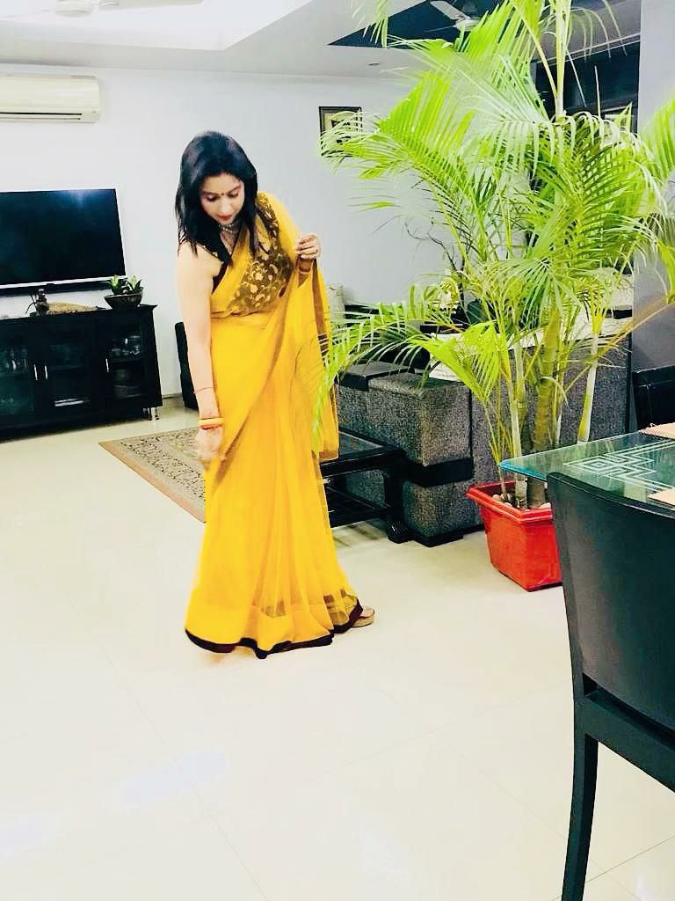

Aarti Yadav

Summary
Certified in Digital Marketing Dual Specialized in Finance & HR
Email: raoaarti7600@gmail.com
Mobile Number: 9711119744
Education
- Certified in digital marketing from Digiperform in 2022 with 1st division
- Master of Arts (Economics) from Arni University in 2017-2019 with 1st division
- B. ED (Bachelor of Education) from Swami Vivekanand University in 2015-2017 with 1st division
- MBA from Maharishi Dayanand University in 2013-2015 with 1st division
- BBA from Jamia Hamdard University in 2010-2013
- 12th Board from CBSE in 2010
- 10th Board from CBSE in 2008
Work Experience
Admin Assistant (Freelancer)
- Presently I am working in under an IT Developer as a freelancer
- Nature of work performed as an Admin Assistant
- Content Writer
- Email Handing
- Label Aligning
- Idea Sharing
- Opportunities received
- Got an opportunity of working with an International Company under an experienced IT Developer based in USA.
- It is a great Global Exposure for me to enhance my skills and personality.
Social Media Manager
- Presently I am working Social Media Manager in UK.
- Nature of work performed as Social Media Management:
- Content Writer
- Graphic Designer
- Video Editor
- Social Media Handling
- Opportunities received
- Got an opportunity of working with experienced person who helps me to learn AI.
- It is a great Global Exposure for me to enhance my skills and personality in the field of Digital Marketing.
CBSE & Examination Incharge
- Pine Crest Public School, Gurgaon
- Roles and Responsibilities
- During my working tenure, I have worked on different occasions like at the time of examinations have to examine the content provided by the subject teachers.
- My role was to examine and align the Question paper as per the CBSE guidelines.
- Conduct the examination and assign the duties accordingly.
- During the examination my role was to observe each and every activity taking place, at that point of time so that everything goes as per plan.
- I prepare results according to CBSE Norms.
- Managing official mails from CBSE.
- Appreciations received
- Appreciated by the Principal for showing the technical knowledge as per experience and for communicating the issues on real time basis to onshore CBSE Board times.
- Appreciated by principal for working late in case of urgent deadlines needs to be met and proactive in taking necessary calls with the onshore teams at the time of board exams.
Economics Teacher
- Lingaya’s Public School, Delhi
- Roles and Responsibilities
- During my working tenure, I have worked as an Economics teacher.
- Nature of work performed in Lingayas Public School
- Teaching the Classes from 11 and 12 grade.
- Prepare exam question papers.
- Conduct the exams.
- Appreciations received
- Appreciated by the Principal for 100 % Result in 12th Board exams in economics subject.
Personal skills
- Always willing to learn new technologies related to AI.
- Comprehensive problem-solving abilities
- Willingness to learn team facilitator hard worker.
- I have adopted effective communication skills to suit different situations, individual or teams to ensure that there is no communication gap,
requirements are well understood, issues identified are communicated on timely basis and
expectations and requirements are met.
Extra curricular acitivites
Social
- Always an active on Social Platforms
Interests/Hobbies
- Dancing, Travelling, learning new things and designing,
Others